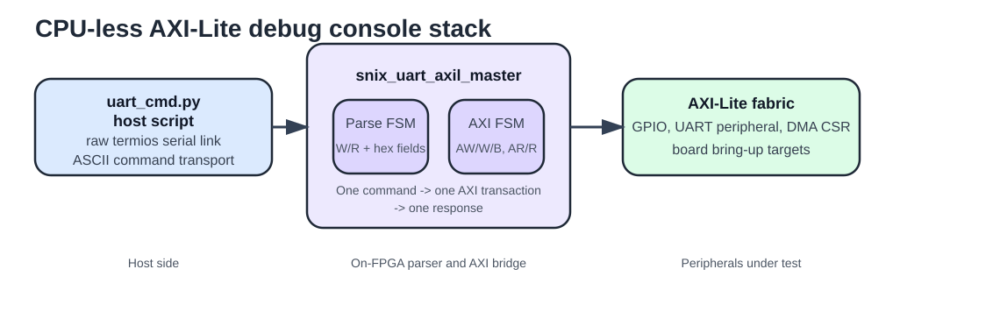
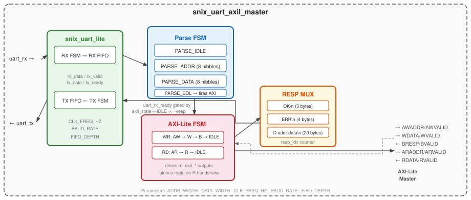
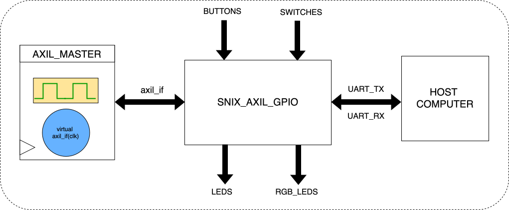

Motivation
Most FPGA bring-up and debug flows assume the presence of a CPU to issue bus transactions. A processor reads a status register, writes a configuration word, or polls a done flag. Without a processor, the standard approach is to add a JTAG-to-AXI bridge or wait until enough of the system is working to run software. That is often too late.
snix_uart_axil_master eliminates that dependency. Any host with a serial port — a laptop running a two-line Python script, a Raspberry Pi, a test bench — can read and write any AXI-Lite register in the FPGA using simple ASCII commands over a serial cable. No processor is required inside the FPGA fabric.
The practical impact is significant. Without a processor you can still configure DMA descriptors, read status registers, toggle LEDs, verify peripheral behaviour, and bring up new blocks one register at a time. Before the application processor is up, before the Linux image boots, and even before the SoC clocks are stable, the UART master is already running and accepting commands. The byte transport layer is provided by snix_uart_lite, which handles 8N1 framing, baud-rate generation, and shallow TX/RX FIFOs. This module sits on top of that transport and interprets the byte stream as a command protocol.
Command protocol
The protocol is intentionally ASCII and human-readable. Commands are terminated with a newline character (\n). Whitespace between fields is tolerated. Hex digits may be upper or lower case.
| Command format | Example | Response format | Example response | AXI transaction |
|---|---|---|---|---|
W <addr32hex> <data32hex>\n |
W 00000010 DEADBEEF\n |
OK\n |
OK\n |
AXI-Lite write: AW + W + B channels |
R <addr32hex>\n |
R 00000010\n |
D <addr32hex> <data32hex>\n |
D 00000010 DEADBEEF\n |
AXI-Lite read: AR + R channels |
| Any unrecognised command | X 00000000\n |
ERR\n |
ERR\n |
None — parse error, no AXI transaction issued |
Table (1): Command protocol summary. Address and data fields are always 8 hex digits (32 bits). The response to a read echoes both the address and the data to make log files self-documenting.
How the UART syntax parser works
The parser is intentionally small. It only understands two commands:
W <addr> <data>\nfor writesR <addr>\nfor reads
Internally it behaves like a compact command decoder rather than a shell. It consumes one byte at a time, classifies the current field, and shifts each hex nibble into either cmd_addr or cmd_data. Once it has seen eight address nibbles it knows exactly whether the next field must be data (write) or a newline (read).
The table below traces the write command W 00000010 DEADBEEF\n character by character. The parser accumulates hex nibbles into cmd_addr and cmd_data using shift-in semantics: on each valid hex digit, the register is shifted left by four bits and the new nibble is inserted at the bottom.
| Character | ASCII hex | Parser state (before) | Action |
|---|---|---|---|
W | 0x57 | PARSE_IDLE | Set cmd_is_write=1, clear cmd_addr, nibble_count=0, transition to PARSE_ADDR |
| 0x20 | PARSE_ADDR | Leading space — stay in PARSE_ADDR (whitespace skip) |
0 | 0x30 | PARSE_ADDR | cmd_addr = {cmd_addr[27:0], 4'h0}, nibble_count=1 |
0 | 0x30 | PARSE_ADDR | cmd_addr = {cmd_addr[27:0], 4'h0}, nibble_count=2 |
0 | 0x30 | PARSE_ADDR | cmd_addr = {cmd_addr[27:0], 4'h0}, nibble_count=3 |
0 | 0x30 | PARSE_ADDR | cmd_addr = {cmd_addr[27:0], 4'h0}, nibble_count=4 |
0 | 0x30 | PARSE_ADDR | cmd_addr = {cmd_addr[27:0], 4'h0}, nibble_count=5 |
0 | 0x30 | PARSE_ADDR | cmd_addr = {cmd_addr[27:0], 4'h0}, nibble_count=6 |
1 | 0x31 | PARSE_ADDR | cmd_addr = {cmd_addr[27:0], 4'h1}, nibble_count=7 |
0 | 0x30 | PARSE_ADDR | cmd_addr = {cmd_addr[27:0], 4'h0}, nibble_count=8 → 8th nibble complete, transition to PARSE_DATA |
| 0x20 | PARSE_DATA | Leading space — stay in PARSE_DATA (whitespace skip) |
D | 0x44 | PARSE_DATA | cmd_data = {cmd_data[27:0], 4'hD}, nibble_count=1 |
E | 0x45 | PARSE_DATA | cmd_data = {cmd_data[27:0], 4'hE}, nibble_count=2 |
A | 0x41 | PARSE_DATA | cmd_data = {cmd_data[27:0], 4'hA}, nibble_count=3 |
D | 0x44 | PARSE_DATA | cmd_data = {cmd_data[27:0], 4'hD}, nibble_count=4 |
B | 0x42 | PARSE_DATA | cmd_data = {cmd_data[27:0], 4'hB}, nibble_count=5 |
E | 0x45 | PARSE_DATA | cmd_data = {cmd_data[27:0], 4'hE}, nibble_count=6 |
E | 0x45 | PARSE_DATA | cmd_data = {cmd_data[27:0], 4'hE}, nibble_count=7 |
F | 0x46 | PARSE_DATA | cmd_data = {cmd_data[27:0], 4'hF}, nibble_count=8 → 8th nibble complete, transition to PARSE_EOL |
\n | 0x0A | PARSE_EOL | Command complete. Load m_axil_awaddr=cmd_addr, m_axil_wdata=cmd_data, assert m_axil_awvalid, transition AXI FSM to AXIL_WRITE_AW, parser returns to PARSE_IDLE |
Table (2): Character-by-character trace of W 00000010 DEADBEEF\n. After the final newline, cmd_addr = 0x00000010 and cmd_data = 0xDEADBEEF and the AXI write transaction begins.
{kind=link}

Figure (1): End-to-end debug-console stack. A tiny CLI script sends ASCII commands over UART, the parser turns them into AXI-Lite transactions, and the same path can bring up GPIO, UART peripherals, or DMA register blocks without any CPU inside the FPGA.
{kind=link}

Figure (2): snix_uart_axil_master architecture. The Parse FSM consumes incoming bytes from snix_uart_lite and fires the AXI-Lite FSM on a completed command. The RESP MUX assembles the response string byte-by-byte and feeds it back through the UART transmitter. The two FSMs run sequentially: the parser stalls while an AXI transaction is in flight.
Parse FSM
The parser has four states:
PARSE_IDLE: Waiting for the first byte of a command.Worwsetscmd_is_write=1and moves toPARSE_ADDR.Rorrclearscmd_is_writeand moves toPARSE_ADDR. Whitespace is skipped. Any other byte immediately triggers anERRresponse.PARSE_ADDR: Accumulating up to 8 hex nibbles intocmd_addr. A leading space before the first nibble is skipped. Non-hex characters triggerERR. After the 8th nibble, transitions toPARSE_DATA(write) orPARSE_EOL(read).PARSE_DATA: Accumulating up to 8 hex nibbles intocmd_data. Same whitespace skip and error handling asPARSE_ADDR. After the 8th nibble, transitions toPARSE_EOL.PARSE_EOL: Waiting for the newline that commits the command. An optional\ris tolerated for Windows-style line endings. On\n, the parsed address and data are loaded into the AXI interface and the AXI FSM is kicked off.
A critical property of the parser is that it only consumes incoming bytes when the system is fully idle:
assign uart_rx_ready = (axil_state == AXIL_IDLE) & ~resp_active;
If an AXI transaction is in flight (axil_state != AXIL_IDLE), the parser stalls: no bytes are consumed from the UART RX FIFO. Similarly, if a response is currently being transmitted (resp_active), the parser stalls. The parser and the AXI state machine therefore run strictly sequentially. There is never a situation where a second command begins to be parsed while the first is still on the bus or the first response is still being sent. Every command goes through exactly one complete AXI transaction and one complete response transmission before the next command can start.
That sequential behavior is deliberate. This block is meant for bring-up and debug, where clarity matters more than bus throughput. A serial log that shows one command, one AXI transaction, and one response at a time is much easier to trust when the rest of the system is still coming up.
Helper functions
Three SystemVerilog functions implement the nibble-level ASCII conversion, declared as function automatic for purely combinational evaluation:
function automatic logic is_hex(input logic [7:0] c);
is_hex = ((c >= "0") && (c <= "9")) ||
((c >= "a") && (c <= "f")) ||
((c >= "A") && (c <= "F"));
endfunctionfunction automatic logic [3:0] hex_value(input logic [7:0] c);
if ((c >= "0") && (c <= "9")) begin
hex_value = c - "0";
end else if ((c >= "a") && (c <= "f")) begin
hex_value = (c - "a") + 8'd10;
end else begin
hex_value = (c - "A") + 8'd10;
end
endfunctionfunction automatic logic [7:0] hex_ascii(input logic [3:0] nibble);
if (nibble < 10) begin
hex_ascii = "0" + {4'b0, nibble};
end else begin
hex_ascii = "A" + {4'b0, (nibble - 4'd10)};
end
endfunction
is_hex guards nibble accumulation in PARSE_ADDR and PARSE_DATA. hex_value converts an ASCII character to its 4-bit value. hex_ascii is the inverse, used in response assembly to emit upper-case hex characters. Using functions rather than always blocks makes the intent clear: these are purely combinational operations with no state, no latency, and no side effects.
AXI-Lite state machine
The AXI-Lite state machine has six states and handles both write and read transactions:
AXIL_IDLE: Waiting for the parse FSM to complete a command.AXIL_WRITE_AW: Drivesawvalidand waits forawreadyfrom the slave. On handshake, deassertsawvalidand moves toAXIL_WRITE_W.AXIL_WRITE_W: Driveswvalidand waits forwready. On handshake, assertsbreadyand moves toAXIL_WRITE_B.AXIL_WRITE_B: Waits for the write response (bvalid). On handshake, arms theOKresponse and returns toAXIL_IDLE.AXIL_READ_AR: Drivesarvalidand waits forarready. On handshake, assertsrreadyand moves toAXIL_READ_R.AXIL_READ_R: Waits for read data (rvalid). On handshake, latchesm_axil_rdata, arms theRESP_READresponse, and returns toAXIL_IDLE.
The AW and W channels are issued sequentially: AXIL_WRITE_AW completes before AXIL_WRITE_W begins. This trades theoretical throughput for robustness: some AXI-Lite slave implementations do not correctly handle simultaneous AW and W assertion, particularly simple register blocks and CSR arrays. For a bring-up and debug master where correctness is more important than throughput, this is the right trade-off.
Response assembly
Responses are assembled byte by byte from a combinational always_comb block that selects the current response byte based on resp_kind and resp_idx. A clocked counter increments resp_idx each time the UART transmitter accepts a byte.
| Response type | Content | resp_len (bytes) | Notes |
|---|---|---|---|
RESP_OK | OK\n | 3 | Emitted after a successful write transaction |
RESP_ERR | ERR\n | 4 | Emitted on any parse error; no AXI transaction is issued |
RESP_READ | D <addr8hex> <data8hex>\n | 20 | "D " + 8 address chars + " " + 8 data chars + "\n" |
Table (3): Response types, content, and byte lengths. The RESP_READ response is exactly 20 bytes: 1 + 1 + 8 + 1 + 8 + 1.
For RESP_READ, the combinational mux emits response characters one by one. Indices 0–1 are the literal "D " prefix. Indices 2–9 are the eight hex characters of the address, generated by calling hex_ascii on successive nibbles of cmd_addr from MSB to LSB. Index 10 is a space. Indices 11–18 are the eight hex characters of read_data_latched. Index 19 is the terminating newline.
Write transaction timing
Figure (3): Parse FSM and AXI write transaction sequenced for W 00000010 DEADBEEF\n. At the newline, the parser returns to IDLE and the AXI FSM begins the write sequence. resp_active asserts after the write response is received and stays high until the last byte of OK\n has been transmitted.
Testbench
The testbench instantiates the DUT alongside a second snix_uart_lite instance representing the host side of the serial link. The two UART cores are connected back-to-back. Simulation parameters are CLK_FREQ_HZ=10MHz and BAUD_RATE=1MHz, giving a divider of 10 clocks per UART bit.
Bytes received by the host UART are pushed onto a SystemVerilog queue. The host_send_string task sends a string one byte at a time; host_expect_string drains bytes from the queue and calls $fatal on any mismatch. The AXI slave is a memory model with 1024 words of address space.
| # | Command sent | Expected response | What it tests |
|---|---|---|---|
| 1 | W 00000010 DEADBEEF\n | OK\n | Write transaction: full AW + W + B sequence, OK response |
| 2 | R 00000010\n | D 00000010 DEADBEEF\n | Read transaction: AR + R sequence, read-back of the previously written value |
| 3 | X 00000000\n | ERR\n | Parse error: unrecognised command byte, no AXI transaction issued |
Table (4): Testbench cases. Test 2 depends on test 1 having written 0xDEADBEEF to address 0x10.
make run TESTNAME=uart_axil_masterReal hardware bring-up session
The module was validated on hardware using uart_cmd.py, a minimal Python script that opens the serial port with raw termios, sends one ASCII command, and prints the response. The following session is from the actual bring-up of the GPIO peripheral:
$ ./uart_cmd.py "W 00000008 00000001"
TX: W 00000008 00000001
RX: OK
$ ./uart_cmd.py "R 00000008"
TX: R 00000008
RX: D 00000008 00000002
$ ./uart_cmd.py "R 00000004"
TX: R 00000004
RX: D 00000004 00000000
Address 0x00000008 maps to the GPIO BTN_EDGE register, which captures button-press events as a sticky one-hot flag. Writing 0x00000001 clears bit 0. Reading back returns 0x00000002, indicating a second button was pressed in the intervening time. No processor, no firmware, no JTAG: the entire GPIO bring-up was performed through this serial command interface.
The same interface works for any peripheral
The snix_uart_axil_master does not know or care whether it is talking to a GPIO block, a DMA engine, or a custom CSR array. It issues AXI-Lite transactions to whatever address it is told to access. DMA source address, destination address, transfer length, and control registers can all be written with the same one-liner that toggled an LED. Before the application processor is powered, before U-Boot runs, and before any software stack is present, the serial cable is the control plane.
GPIO: the first peripheral on the bus
GPIO is the right first peripheral to validate this infrastructure. Write a register, see an LED blink. That single action confirms the clock is running, reset has released, the AXI fabric is alive, and the register write path is working end-to-end. No protocol stack, no packet framing, no driver. The GPIO peripheral described here, snix_axil_gpio from verilaxi, also exposes the first real hardware problems that simulation tends to hide: clock-domain crossing on switch inputs, mechanical contact bounce on buttons, and reliable sticky edge detection for polled bring-up loops.
Why GPIO for board bring-up
GPIO is the "hello world" of hardware. But it also exposes the first real hardware problems that a purely simulation-based workflow tends to hide. Buttons bounce: a single mechanical press generates a burst of rapid transitions that software sees as multiple presses unless the logic suppresses them. Switch inputs cross a clock domain: a signal that changes asynchronously to the system clock can leave a flip-flop output in an undefined state if the timing is unlucky. And edge detection requires more thought than it appears: a brief button press that occurs between two polling iterations must not be lost.
A proper GPIO peripheral addresses all three of these issues in hardware. snix_axil_gpio exposes LEDs and RGB outputs as writable registers, switch and button state as readable registers, and a sticky rising-edge capture register with write-one-to-clear semantics for buttons. The AXI-Lite slave interface means it integrates directly into any AXI fabric, and it can be driven without a CPU using the UART master described above.
Register map
The peripheral exposes five 32-bit registers. The default configuration uses NUM_LEDS=4, NUM_RGB_LEDS=2, NUM_SWITCHES=4, and NUM_BUTTONS=4.
| Address | Name | Access | Width | Bit field description |
|---|---|---|---|---|
0x00 |
GPIO_OUT |
R/W | 4 | [3:0] LED outputs. Write to drive LEDs; read back reflects current register value. WSTRB-masked. |
0x04 |
GPIO_IN |
RO | 8 | [3:0] synchronized switch inputs (sw_sync2); [7:4] debounced button inputs (btn_db). Read-only; writes are ignored. |
0x08 |
BTN_EDGE |
R/W1C | 4 | [3:0] sticky rising-edge capture for each button. Set on the first rising edge after reset or after being cleared. Write 1 to a bit to clear it; write 0 has no effect. |
0x0C |
RGB0 |
R/W | 3 | [2:0] RGB channel values for the first RGB LED: bit 0 = R, bit 1 = G, bit 2 = B. WSTRB-masked. |
0x10 |
RGB1 |
R/W | 3 | [2:0] RGB channel values for the second RGB LED: bit 0 = R, bit 1 = G, bit 2 = B. WSTRB-masked. |
Table (5): snix_axil_gpio register map. All registers are 32-bit aligned; unused bits read as zero.
{kind=link}

Figure (3): snix_axil_gpio architecture. Switch inputs pass through a 2-FF synchronizer; button inputs add a per-button debounce counter stage; LED and RGB outputs are write-only registers; the BTN_EDGE register provides sticky W1C edge capture for buttons.
LED and RGB output path
Writing to GPIO_OUT drives the gpio_led output bus; writing to RGB0 or RGB1 drives the corresponding three-bit slice of the gpio_rgb bus. All writes are WSTRB-aware, and the hardware builds a per-bit enable mask before updating any register:
always_comb begin
write_mask = '0;
for (int i = 0; i < DATA_WIDTH/8; i++) begin
write_mask[i*8 +: 8] = {8{wstrb_reg[i]}};
end
end
Numerical examples: writing 0xA (binary 1010) to GPIO_OUT turns on LEDs 3 and 1. Writing 0x5 (binary 101) to RGB0 sets R=1, G=0, B=1 — magenta. Writing 0x3 (binary 011) to RGB1 sets R=1, G=1, B=0 — yellow. The readback path is symmetric, allowing software to perform read-modify-write operations.
Switch synchronization
Switch inputs arrive from off-chip logic that is not synchronous to the FPGA clock. When an asynchronous signal changes near a clock edge, the flip-flop that captures it may resolve to an unpredictable value. A two-stage synchronizer makes the probability of unresolved metastability negligible: the first flip-flop resolves within a clock period in all but extremely rare cases, and the second flip-flop never sees a transitioning input.
sw_sync1 <= gpio_sw;
sw_sync2 <= sw_sync1;
Mechanical slide switches hold a stable position for hundreds of milliseconds, so no further filtering beyond the two-FF chain is needed. The synchronized value sw_sync2 appears in GPIO_IN[3:0].
Button debounce
Buttons are different from switches. When a mechanical push-button contact closes, contact chatter produces a burst of rapid open-close transitions lasting between 1 and 20 milliseconds. The FPGA clock samples at hundreds of megahertz and sees every edge as a distinct event. Without debounce logic, a single press appears as dozens.
The debounce algorithm in snix_axil_gpio works on a per-button basis. Each button has an independent counter. The counter increments every clock cycle that the synchronized input disagrees with the currently committed debounced value. When the counter reaches DEBOUNCE_CYCLES-1, the debounced output is updated and the counter resets. If the input returns to the committed value at any point before the counter expires, the counter resets without updating the output.
for (int i = 0; i < NUM_BUTTONS; i++) begin
if (btn_sync2[i] == btn_db[i]) begin
btn_cnt[i] <= '0;
end else if (btn_cnt[i] == BTN_CNT_W'(DEBOUNCE_CYCLES-1)) begin
btn_db[i] <= btn_sync2[i];
btn_cnt[i] <= '0;
end else begin
btn_cnt[i] <= btn_cnt[i] + BTN_CNT_W'(1);
end
end
At a 100 MHz system clock, setting DEBOUNCE_CYCLES=10_000_000 gives a 100 ms debounce window. In simulation, DEBOUNCE_CYCLES=4 exercises the same counter logic in a handful of clock cycles rather than millions.
Debounce and edge capture waveform
Figure (4): Button debounce and edge capture. raw_btn bounces briefly on press; btn_sync2 is the synchronized button input after the two-FF chain; btn_db only commits the new value after four consecutive stable cycles; btn_edge latches the rising edge and holds it until explicitly cleared.
Edge capture and W1C semantics
A debounced button output tells you the current state of the button: pressed or released. But if you are running a control loop that polls the GPIO registers periodically, a brief button press that starts and ends between two polling iterations is invisible in the debounced output. Sticky edge capture solves this.
The BTN_EDGE register bit for each button is set on the first rising edge of btn_db after reset or after being cleared, and it remains set until software explicitly clears it. A brief press is guaranteed to be visible at the next read, regardless of how much time passes between press and poll.
assign btn_rise = btn_db & ~btn_db_d; // 1-cycle pulse on rising edge
btn_edge <= (btn_edge & ~clr_mask) | btn_rise;The W1C (write-one-to-clear) idiom is the standard hardware convention for interrupt-status-like registers. Writing a 1 to a bit clears it; writing a 0 leaves it unchanged. The clear mask is built from the write data and the write strobe:
clr_mask[NUM_BUTTONS-1:0] = wdata_reg[NUM_BUTTONS-1:0] & write_mask[NUM_BUTTONS-1:0];Each button's edge bit is independent. The following hardware session on the Arty S7-50 board confirms it:
$ ./uart_cmd.py "R 00000008" # BTN_EDGE
RX: D 00000008 00000000 # clean
$ ./uart_cmd.py "R 00000008" # after pressing BTN1
RX: D 00000008 00000002 # bit 1 set
$ ./uart_cmd.py "R 00000008" # after pressing BTN0
RX: D 00000008 00000003 # bits 0 and 1 set
$ ./uart_cmd.py "R 00000004" # GPIO_IN
RX: D 00000004 00000000 # buttons released
$ ./uart_cmd.py "W 00000008 00000001" # W1C clear bit 0
RX: OK
$ ./uart_cmd.py "R 00000008"
RX: D 00000008 00000002 # bit 0 cleared, bit 1 still pendingGenerate block for DEBOUNCE_CYCLES
Waiting for millions of clock cycles in simulation is impractical. A generate block lets the same RTL target both simulation and hardware with a single parameter:
generate
if (DEBOUNCE_CYCLES <= 1) begin : GEN_BTN_NODEBOUNCE
always_ff @(posedge clk or negedge rst_n) begin
if (!rst_n) begin
btn_db <= '0;
end else begin
btn_db <= btn_sync2;
end
end
end else begin : GEN_BTN_DEBOUNCE
// per-button counter logic
...
end
endgenerate
Setting DEBOUNCE_CYCLES=4 in the testbench exercises the counter path but completes debounce in 4 cycles rather than millions, making simulation fast without sacrificing behavioral coverage of the counter logic itself.
AXI-Lite interface and register slices
The peripheral uses three snix_register_slice instances — one on the AW channel, one on the W channel, and one on the AR channel — to break the combinatorial paths between the AXI fabric and the internal register logic. This improves timing closure at the cost of one additional cycle of latency on the address and data acceptance paths. All five registers respond with a fixed OKAY response. Writes to read-only registers (such as GPIO_IN) are silently ignored.
Testbench walkthrough
The testbench test_axil_gpio.sv runs seven sequential test phases with NUM_BUTTONS=2, NUM_SWITCHES=4, NUM_RGB_LEDS=2, NUM_LEDS=4, and DEBOUNCE_CYCLES=4:
- LED write. Writes
0xAtoGPIO_OUTand assertsgpio_led=4'b1010. - RGB write and readback. Writes
0x5toRGB0and0x3toRGB1, then reads both back. Confirmsgpio_rgb[2:0]=101andgpio_rgb[5:3]=011. - Switch read. Sets
gpio_sw=4'b0101, waits 3 cycles for the two-FF synchronizer to propagate, then readsGPIO_IN. Expectsrd_data[3:0]=0101. - Button debounce. Toggles
gpio_btn[0]high for 1 cycle, low for 1 cycle, then holds high for 8 cycles. ReadsGPIO_INand confirmsrd_data[4]=1. The two bounce pulses do not satisfy theDEBOUNCE_CYCLES=4threshold; the final stable hold does. - Edge capture read. Reads
BTN_EDGEand confirmsrd_data[1:0]=01: bit 0 is set becausebtn[0]rose; bit 1 is clear becausebtn[1]was never pressed. - W1C clear. Writes
0x1toBTN_EDGE, then reads back. Expectsrd_data[1:0]=00. - Edge relatch after clear. Releases and re-presses
btn[0]. ReadsBTN_EDGEand expectsrd_data[1:0]=01: the cleared bit relatchs on the next rising edge.
[AXIL-GPIO][LED ] gpio_led=0xa
[AXIL-GPIO][RGB ] rgb0=0x5 rgb1=0x3
[AXIL-GPIO][IN ] gpio_in=0x00000005
[AXIL-GPIO][EDGE] btn_edge=0x1
test_axil_gpio: PASSmake run TESTNAME=axil_gpioHardware validation and the metastability lesson
The GPIO peripheral was validated on the Arty S7-50 board using the UART master as the command interface. The BTN_EDGE hardware session above is a verbatim capture from that board.
An earlier iteration of the UART receiver did not include the two-FF synchronizer on the uart_rx pin. Simulation passed without it because the testbench drives uart_rx synchronously. On hardware, the UART RX pin arrives asynchronously from the USB-to-UART bridge, and the single flip-flop at the receiver input occasionally entered a metastable state. The result was corrupted frames and AXI transactions that appeared valid but carried wrong addresses or data. Adding the two-FF synchronizer resolved the issue entirely. This is the classic example of a hardware bug that simulation cannot find: the physical phenomenon of metastability simply does not exist in a synchronous simulation model.
Summary
snix_uart_axil_master is a compact ASCII command parser and AXI-Lite bus master that enables a host computer to read and write any AXI-Lite register in an FPGA without requiring a processor in the fabric. The two-FSM architecture — parse FSM stalled by uart_rx_ready whenever the AXI FSM is active — ensures that commands are processed strictly sequentially and that the design works correctly with any compliant AXI-Lite slave. The sequential AW-then-W write channel approach trades theoretical throughput for robustness with real slaves.
snix_axil_gpio is the natural first peripheral to validate this infrastructure. It exposes the three problems that matter most in real hardware: clock-domain crossing (handled by 2-FF synchronizers on switch and button inputs), mechanical bounce (handled by a per-button stable-period counter with a parameterized debounce window), and reliable event capture for polled loops (handled by a sticky W1C edge-capture register). Together, the UART master and the GPIO peripheral form a practical CPU-less debug console: a host laptop issues human-readable ASCII commands and the FPGA executes AXI-Lite transactions directly against real hardware registers.
Read next:
Building a UART Core and Turning It into an AXI-Lite Peripheral — the UART byte transport and register-slice slave that underpin this entire control plane.
Implementation pointers in verilaxi: rtl/uart/snix_uart_axil_master.sv, rtl/axil/snix_axil_gpio.sv, tb/tests/uart/test_uart_axil_master.sv, tb/tests/axil/test_axil_gpio.sv.
References:
[1] ARM. AMBA AXI and ACE Protocol Specification. 2011.
[2] Jack Ganssle. A Guide to Debouncing. The Ganssle Group, 2004.
[3] Clifford E. Cummings. Synthesis and Scripting Techniques for Designing Multi-Asynchronous Clock Designs. SNUG 2001.
[4] Building a UART Core and Turning It into an AXI-Lite Peripheral - sistenix.com
Also available in GitHub.